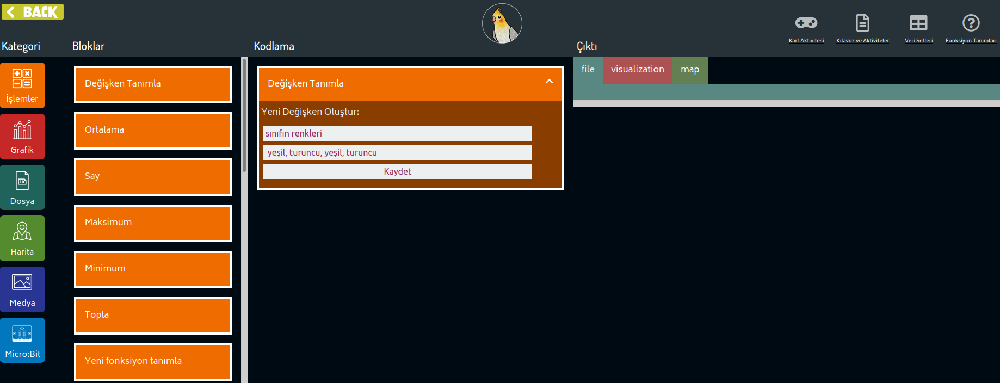

The Marti application is a platform where you can process and visualize data using drag and drop coding cards. When you open the application, you will see the following interface.
While processing data with Marti, you can drag the coding card blocks you see in the Blocks area to the coding area to open the cards. For example, when we drag and drop the Define variable card into the Coding field, two spaces will open where you can enter "Name" and "Value".
You can quickly navigate between the blocks by clicking the icons you see in the category area. Each category also lets you navigate between different Output tabs. For example, if you are going to open a file, you will see the values in that file in the "File" tab in the Output area. If you want to draw a chart, you will see it in the "Visualization" tab.
Let's get acquainted with the data collection, processing, and visualization mechanisms of Marti with an example activity.
In this activity, you will learn how different types of data collected in the classroom can be expressed and visualized with the Marti application. Throughout the activity, you will see how different mathematical operations can be used to play with data and their possible applications in Seagull.
The table below shows some of the data collected as a result of a classroom survey.
Name |
Age |
Gender |
Favorite Color |
Ahmet |
9 |
Boy |
Green |
Leyla |
10 |
Girl |
Orange |
Cansu |
9 |
Girl |
Green |
Hakan |
10 |
Boy |
Orange |
... |
... |
... |
... |
This table aims to show the trend in the students' favorite colors according to their age and gender distribution. I wonder if age or gender has an impact when choosing a favorite color, or is it completely irrelevant?
When we analyze the table according to age and gender, we notice that no particular color preference is observed according to gender. However, while 9-year-old students preferred the color green, 10-year-old students preferred the color orange.
But according to the results of this survey, can we say that all 9-year-old children in Turkey prefer the color green? Of course, we cannot claim this. The community we present the survey to consists of very few people, and they are all in the same class, so they are susceptible to being influenced by each other.
To obtain a scalable survey result, the data must be distributed dispersedly among the area the survey is to be conducted in and applied to enough people to make the scalability of the results reasonable.
Now, in the activity we will be doing, we will fill a similar table for our class. We will learn how to do basic data operations and reflect the results of different data types with the Marti application.
Let's draw a table with columns for name, age, gender, and favorite color on a blank sheet of paper. (You can also use the sample data collection page to which you will be directed when the button below is clicked. Instead of collecting data for "Favorite Color" data, you can ask questions that may be of more interest to the class, such as data for "Pet", "Favorite Sport").
Let's fill in the table we prepared by interviewing our classmates.
Transferring the Data We Collected to the Marti Interface
Depending on what we want to do with the collected data, we can save our table in two different ways:
Defining Variables
We can store each column in the table using a separate variable. A variable is a symbol we define to store the data we have and use it in the programming environment. To define a variable in the Marti interface, let's drag the Define Variable box to the coding area. Let's define a variable called "class colors" to define the class's favorite colors:

The figure above shows the moment we save the colors in our example table to the variable. When we click the Save button, a confirmation text will appear at the bottom of the screen. If this confirmation box says that the defined variable is saved, then everything is fine.
Creating a Table
What should we do if we want to save data like names, lucky numbers, and cities along with the color data?
If we want to transfer the entire table we have created to Marti altogether, let's drag the Create Table block from the File category to the coding area.
When we want to create a table, the first line we need to fill out is the title, which defines the data in the table. The title and all the data we have filled out should be separated by commas (,). In the example above, the names, favorite colors, the cities of birth, and numbers of a group of four were recorded.
With the "Create Table" coding card, we can use the "Draw Graph from Table" command to instantly see the data we have recorded. With Marti, we can visualize three types of data: Line, Circle (pie), and Column (bar)
Showing the relationship between Age and Height with a line or bar graph can be a suitable way to show how height changes as age increases. To try the line chart, first, select the "line" chart from the selection menu. Then, enter a title that clearly describes the chart so that other people understand it when they see it.

You can choose the "bar" chart instead of the line chart on the coding card to quickly change the type of the chart.

Data Visualization Using Variables
When there are two columns in the table, we can use the Make Graph from Chart card to visualize data quickly. When the table has more columns or when we want to include different variables, the Draw Graph with Variable card will help us.

Using the card, we can draw either one of the line charts, pie charts, or bar charts in 4 steps.
- Select the chart type.
- Set the values you want on the x-axis, the horizontal axis, equal to a variable.
- You can display more than one variable at the same time in the y-axis, which is the vertical axis. If you want to show multiple variables at once, you can separate them with commas.
- Set a descriptive title to indicate the purpose of the chart correctly.
All the examples we have given so far have covered the visualization of numeric values. The data visualization method we choose depends on what type of data we are transferring. For example, if we have cities in our dataset, it might make sense to show our data on a map. If we want to show the distribution of favorite colors according to cities, we can do this in an eye-catching manner by painting these cities in that particular color.
Data visualization can be a very powerful tool when used correctly. It can rapidly convey data that requires very long readings and analyses. By using different materials and different visualization tools, we can reflect this power in our classrooms. We can encourage students to prepare posters that will both develop their creativity and explain data science to the community we live in.
In order to support the diversity of data visualization, we will also grasp how we can develop different visualizations with different materials, starting with the Marti interface.
Let's start with some basic information on electronics;
This simple circuit you will probably remember from your science class consists of a battery that provides electrical energy, a light bulb, and a switch that switches the light on and off. Our electronic circuit, with its sliding button used to show change according to the number of years, solely comprises of these objects. The final product will work as follows:
The orange button will act as a switch that completes electricity from the positive (+) end so that when the button is slid for a certain period of time, the lights will turn on as we pass the empty spaces.
For this, let's stick the LED on the back of the page with copper wires that serve to prolong the circuit:
|

We can use this simple circuit to observe the changes of a particular country over one year. So, what can be done when we want to convey a change not solely over a single year but for many years?
As an example activity, let's visualize the relationship between the extent of the forest areas and of the surface area of a country over many years.
In this activity, we will explore how we can show the top 100 potential players in FIFA18 with the desired features on the map. We will learn about data, analysis methods, visualization techniques, and presenting data for different problems.
In each row of the downloaded data set, there is the name, age, country, club information and the score and potential information calculated based on the performance of the football players.
Name |
Age |
Country |
Point |
Potential |
Club |
C. Ronaldo |
34 |
Portugal |
94 |
94 |
Real Madrid CF |
L. Messi |
30 |
Argentina |
93 |
93 |
FC Barcelona |
F. Muslera |
31 |
Uruguay |
82 |
82 |
Galatasaray SK |
M. Neuer |
31 |
Germany |
92 |
92 |
FC Bayern Munich |
R. Lewandowski |
28 |
Poland |
91 |
91 |
FC Bayern Munich |
E. Hazard |
26 |
Belgium |
90 |
91 |
Chelsea |
... ... |
... |
... |
... |
... |
... |
(The table above shows some of the player data. If we shared all the data here, it would take up more than 10 pages)
Download and View
Dataset Click the "Datasets" button in the navigation area in the upper right corner of the Marti application.
On the site we have entered, you can find different data sets that we will use for the following activities. To download player data, click on the link on the card titled "FIFA18 Football Players." We can use this data by dragging the File > "Select CSV File from Computer" card to the coding area. Next, click on the "Select File" button. After clicking the button and selecting the file, you can view the data in the file you have opened in the Output Area.
Alternatively, you can copy the link of the source CSV file and use this link in the "Open CSV via link" card.
By programming, we can perform many operations in simpler ways. For example, let's say that we are curious about the average age of players coming from different countries, and we want to illustrate our results by using a graph.
Name |
Age |
Country |
Point |
Potential |
Club |
C. Ronaldo |
34 |
Portugal |
94 |
94 |
Real Madrid CF |
L. Messi |
30 |
Argentina |
93 |
93 |
FC Barcelona |
Bruno Fernandes |
34 |
Portugal |
78 |
85 |
Sporting CP |
P. Dybala |
23 |
Argentina |
88 |
93 |
Juventus |
K. De Bruyne |
26 |
Belgium |
89 |
92 |
Manchester City |
T. Courtois |
25 |
Belgium |
89 |
92 |
Chelsea |
It is possible to identify players over the age of 29 from a six-line table and draw a graph using this information. But how long would it take to make this chart for a list of 100 players? Or how many minutes would this process take if there were 10000 players on the table?
For such problems, we can make our job easier by writing a small piece of code. During this activity, we will perform this operation on our 100-player dataset by using the programming interface on the site we have opened.
Filtering Table Data
We can filter data using a conditional operation by dragging the "Filter the Table" card to the coding area. The filtering process resembles the working mechanism of a tea strainer. Just like we want the tea sprouts to remain in the tea strainer and the flavored water to pass through, we enter the data which we hope will "pass through" in the filtering process.
We first need to select a table in the card we left in the coding area. When we open the football player file, the Marti application saves this file with its name. To filter a specific table, we need to select its name.
After selecting the table, we must write a comparison function. As a result of this function, a selection will be made according to the columns features. For example, in the comparison function above, we're trying to find the rows that are equal to "Argentina" in the country block. We can quickly find that there are two Argentine football players in this dataset: Messi and Dybala.
Moving on to a different example, let's try to get a list of football players whose age is over 30. In this case, we need to choose "age" as the column. Then we choose the operation greater than and choose 30 as the value that will be compared to.
SaveResults
At the end of each operation, there happens to be a button at the bottom of the output area which saves this data. If you want to use the filtered table in the future, you can click this "save" button and save the result.
We can click the save button and write "Footballers over 30" in the input field that will appear. Now, we can use this table in the operations we want to do later on.
Select Column from Filtered Table
We select Select Column from the Blocks and drag it to the coding area. We choose the variable we have saved in the card and specify that we want to use the country column. I also save the countries' names in the selected column as variables.

Show Countries on
When you click on Map among the categories, you will see the map and the blocks related to it in the visualization area. To mark it, drag the Add Marker block from the map section.
Let's find the saved name of the column we had selected in the Add Sign block and click the Apply button.
|

In this activity we will design a physics experiment using our phones. Our phones allow us to record physical changes happening in our environment thanks to their sensors. Now, we will measure the intervals of the balls sound hitting the phone's microphone and the air resistance that is developed against different materials.
Description
Data: Information collected to use during research or to solve a problem
In the activity, depending on the time intervals, we will collect data about the when the crashing sound occurred for the each item in the table below:
Tennis Ball |
Cushion Ball |
Elastic Ball |
|||
Distance |
Elapsed Time |
Sound Intensity |
Time |
Sound Intensity |
Time |
Thanks to the data in the table and the information obtained from previous studies, we can easily calculate the air resistance that the ball came across.
When we release a ball without applying any additional force, its velocity and height change every second as follows:
height (m) = 0.5 x gravitational acceleration (m/s2) x time2 (s)
velocity (m/s) = gravitational acceleration (m/s) s2) x seconds (s)
According to these formulas, if 3 seconds pass from the time a ball is released to the time it hits the ground, that ball has been dropped from a height of 45 meters. In this formula, we do not see a parameter depending on the mass. In other words, we should expect a feather and an iron ball dropped from a height of 45 meters to fall on the surface at the exact same time. But it is impossible to witness such a thing in our daily life. This is because in an environment filled with air, light and flat objects like feathers, are weak against a lot of air resistance.
At the YouTube link below, you can find an experiment of a feather and an iron ball that has been dropped simultaneously in a completely air-free environment. The video link takes you right to the beginning of the attempt. As soon as you open it, the experiment will start, so watch carefully:
Now that we can confide in the formulas, we can start our activity to calculate air resistance by coding:
Data Collection with Sensors
Download Phyphox Application to Your Phone In
In this activity, we will collect data with the assistance of our phones. After downloading the Phyphox application to our phone, let's watch the video at the following link:
https://www.youtube.com/watch?v=zRGh9_a1J7s
Let's save the data we have collected through the table identification card. If we do not have the necessary means to collect data, we can use the table below.
Distance |
Drawdown Initial |
Drawdown End |
Time elapsed over distance
Show the calculations you have made in the following spaces: